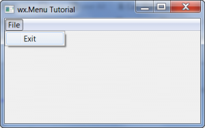
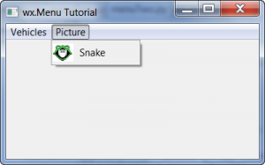
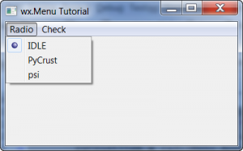

wxPython: All about Menus
February 14, 2012Cross-Platform, Python, wxPythonwxPythonMike
Menus are ubiquitous. They’re in almost all desktop programs. You use them for editing preferences or configuring your program. In wxPython, there are several menu options to choose from. The most familiar is probably wx.Menu. But there are are popup menus and a pure Python implementation known as FlatMenu. We will just be covering wx.Menu and popup menus here because they’re related to each other. FlatMenu also includes a toolbar API, so you’ll have to wait for another article that will just cover that widget all by itself. Let’s get this menu party started!
A Simple Menu Example

We’ll start with something really simple: a menu with just an Exit MenuItem. Here’s the code:
import wx
########################################################################
class MyForm(wx.Frame):
""""""
#----------------------------------------------------------------------
def __init__(self):
"""Constructor"""
wx.Frame.__init__(self, None, title="wx.Menu Tutorial")
self.panel = wx.Panel(self, wx.ID_ANY)
menuBar = wx.MenuBar()
fileMenu = wx.Menu()
exitMenuItem = fileMenu.Append(wx.NewId(), "Exit",
"Exit the application")
menuBar.Append(fileMenu, "&File")
self.Bind(wx.EVT_MENU, self.onExit, exitMenuItem)
self.SetMenuBar(menuBar)
#----------------------------------------------------------------------
def onExit(self, event):
""""""
self.Close()
#----------------------------------------------------------------------
# Run the program
if __name__ == "__main__":
app = wx.App(False)
frame = MyForm().Show()
app.MainLoop()
Let’s break this down a little. To create the menubar, we instantiate an instance of wx.MenuBar. Then we create a an instance of wx.Menu that we call filemenu. Finally, to add the “Exit” item, we append some data to it. In essence, we are appending a wx.MenuItem, but this is kind of a shortcut since we didn’t actually create a wx.MenuItem instance first. We’ll show how to do that in our next example though. Note that when we append the item, we have to pass an id, a label string and a status string. That last one will show up in the Status bar when you hover over the menu item, assuming you have a status bar. Note that to attach an event handler to a menu item, you need use the EVT_MENU event and bind it to the frame. Next we append the Menu itself to the MenuBar object and pass it a string too, which in this case is “File”. Finally we call the frame’s SetMenuBarmethod to attach the menu bar to the frame.
Adding a Picture to a Menu
That’s all there is to creating a menu! Now let’s look at a more complex example! Note: to follow the example below, you’ll need to use your own image file.

import wx
########################################################################
class MyForm(wx.Frame):
""""""
#----------------------------------------------------------------------
def __init__(self):
"""Constructor"""
wx.Frame.__init__(self, None, title="wx.Menu Tutorial")
self.panel = wx.Panel(self, wx.ID_ANY)
# create the menubar
menuBar = wx.MenuBar()
# create the first menu (starting on left)
carMenu = wx.Menu()
carMenu.Append(101, "&Ford", "An American Automaker")
carMenu.Append(102, "&Nissan", "")
carMenu.Append(103, "&Toyota", "Buy Japanese!")
carMenu.Append(104, "&Close", "Close the application")
# add a picture to a menu
picMenu = wx.Menu()
item = wx.MenuItem(picMenu, wx.ID_ANY, "Snake", "This menu has a picture!")
img = wx.Image('snake32.bmp', wx.BITMAP_TYPE_ANY)
item.SetBitmap(wx.BitmapFromImage(img))
picMenu.AppendItem(item)
# add menus to menubar
menuBar.Append(carMenu, "&Vehicles")
menuBar.Append(picMenu, "&Picture")
self.SetMenuBar(menuBar)
#----------------------------------------------------------------------
def onExit(self, event):
""""""
self.Close()
#----------------------------------------------------------------------
# Run the program
if __name__ == "__main__":
app = wx.App(False)
frame = MyForm().Show()
app.MainLoop()
This example is similar to the first one. The main difference is that we add multiple items to out File menu and we have two menus. Note that this time, we actually specify our ID numbers explicitly. This usually isn’t recommended as you might accidentally shadow one of wx’s required IDs. However, you do see examples of this from time to time on the web, so you should be aware of this practice. The next big difference doesn’t come until we get to the picMenu. Here we actually create a wx.MenuItem and add a picture to it via wx.Image and the MenuItem’s SetBitmap method. The rest is pretty much the same.
Now we will spend some time looking at how to add radio and check buttons to our menu.
Adding Radio or Check Buttons

Adding a radio or check button to your menu is actually pretty easy. Let’s take a moment and see how it’s done!
# radiocheck.py
import wx
########################################################################
class MyForm(wx.Frame):
""""""
#----------------------------------------------------------------------
def __init__(self):
"""Constructor"""
wx.Frame.__init__(self, None, title="wx.Menu Tutorial")
self.panel = wx.Panel(self, wx.ID_ANY)
# Create menu bar
menuBar = wx.MenuBar()
# Create radio menu
radioMenu = wx.Menu()
idleItem = radioMenu.Append(wx.NewId(), "IDLE",
"a Python shell using tcl/tk as GUI",
wx.ITEM_RADIO)
pyCrustItem = radioMenu.Append(wx.NewId(),"PyCrust",
"a Python shell using wxPython as GUI",
wx.ITEM_RADIO)
psiItem = radioMenu.Append(wx.NewId(), "psi",
"a simple Python shell using wxPython as GUI",
wx.ITEM_RADIO)
menuBar.Append(radioMenu, "&Radio")
# create check menu
checkMenu = wx.Menu()
wgItem = checkMenu.Append(wx.NewId(), "Wells Fargo", "", wx.ITEM_CHECK)
citiItem = checkMenu.Append(wx.NewId(), "Citibank", "", wx.ITEM_CHECK)
geItem = checkMenu.Append(wx.NewId(), "GE Money Bank", "", wx.ITEM_CHECK)
menuBar.Append(checkMenu, "&Check")
# Attach menu bar to frame
self.SetMenuBar(menuBar)
#----------------------------------------------------------------------
# Run the program
if __name__ == "__main__":
app = wx.App(False)
frame = MyForm().Show()
app.MainLoop()
Yes, as you can see, all you have to do is add a wx.ITEM_RADIO or wx.ITEM_CHECK flag as the kind parameter, which is the 4th parameter. Why is it called “kind” rather than “style” like other widgets? Well, while discussing this on the wxPython IRC channel, Robin Dunn (creator of wxPython) pointed out that it may be because these are different kinds of menu items.
Sub-Menus
The wxPython library also supports sub-menus. Here’s a really simple example to show you how it’s done.
# submenu.py
import wx
########################################################################
class MyForm(wx.Frame):
""""""
#----------------------------------------------------------------------
def __init__(self):
"""Constructor"""
wx.Frame.__init__(self, None, title="wx.Menu Tutorial")
self.panel = wx.Panel(self, wx.ID_ANY)
menuBar = wx.MenuBar()
fileMenu = wx.Menu()
openMenuItem = fileMenu.Append(wx.NewId(), "Open")
# create a submenu
subMenu = wx.Menu()
historyMenuItem = subMenu.Append(wx.NewId(), "Show History")
fileMenu.AppendMenu(wx.NewId(), "History", subMenu)
exitMenuItem = fileMenu.Append(wx.NewId(), "Exit",
"Exit the application")
menuBar.Append(fileMenu, "&File")
self.Bind(wx.EVT_MENU, self.onExit, exitMenuItem)
self.SetMenuBar(menuBar)
#----------------------------------------------------------------------
def onExit(self, event):
""""""
self.Close()
#----------------------------------------------------------------------
# Run the program
if __name__ == "__main__":
app = wx.App(False)
frame = MyForm().Show()
app.MainLoop()
The key here is that instead of using the filemenu’s Append method, we instead use its AppendMenu method. As the name implies, it allows the programmer to actually append a menu instead of a menu item. Yup, that’s it!
Pop-up Menus (AKA: ContextMenus)
Pop-up menus are the kind you see when you right-click on a link in a browser or on a file. They are also known as Context Menus. Here is a fairly trivial example for you to study:
# submenu.py
import wx
########################################################################
class MyForm(wx.Frame):
""""""
#----------------------------------------------------------------------
def __init__(self):
"""Constructor"""
wx.Frame.__init__(self, None, title="Popup Menu Tutorial")
panel = wx.Panel(self, wx.ID_ANY)
lbl = wx.StaticText(panel, label="Right click anywhere!")
self.Bind(wx.EVT_CONTEXT_MENU, self.onContext)
#----------------------------------------------------------------------
def onContext(self, event):
"""
Create and show a Context Menu
"""
# only do this part the first time so the events are only bound once
if not hasattr(self, "popupID1"):
self.popupID1 = wx.NewId()
self.itemTwoId = wx.NewId()
self.itemThreeId = wx.NewId()
self.Bind(wx.EVT_MENU, self.onPopup, id=self.popupID1)
self.Bind(wx.EVT_MENU, self.onPopup, id=self.itemTwoId)
self.Bind(wx.EVT_MENU, self.onExit, id=self.itemThreeId)
# build the menu
menu = wx.Menu()
itemOne = menu.Append(self.popupID1, "ItemOne")
itemTwo = menu.Append(self.itemTwoId, "ItemTwo")
itemThree = menu.Append(self.itemThreeId, "Exit")
# show the popup menu
self.PopupMenu(menu)
menu.Destroy()
#----------------------------------------------------------------------
def onExit(self, event):
"""
Exit program
"""
self.Close()
#----------------------------------------------------------------------
def onPopup(self, event):
"""
Print the label of the menu item selected
"""
itemId = event.GetId()
menu = event.GetEventObject()
menuItem = menu.FindItemById(itemId)
print menuItem.GetLabel()
#----------------------------------------------------------------------
# Run the program
if __name__ == "__main__":
app = wx.App(False)
frame = MyForm().Show()
app.MainLoop()
To begin, we bind wx.EVT_CONTEXT_MENU to the frame. This allows us to right-click anywhere and fire the context menu event, which will create and show our popup menu. The code in the onContext method is based loosely on the wxPython demo for the popup menu. As you can see, we use a conditional statement to check if we’ve already bound the menu events. If we have, we don’t bind them again. Next we create our menu in much the same way as before. Finally, we call the frame’s PopupMenu method and pass it our new menu. This will show the menu to the user. When the user clicks on a menu item, it will fire an event and the menu will be destroyed.
The first two menu items are both bound to our onPopup method. This allows us to see how we can get access to the Menu and the MenuItem attributes. You can get the menu’s id with the event and the Menu itself with the event’s GetEventObject method. Then you can use the menu’s FindItemById method to get a handle to the menu item itself. Finally we print out the menu item’s label.
Wrapping Up
Now you should know most of the menu methods and how to create them, bind events and make different kinds of menu items. You even know how to create popup menus! Now you can make your applications have fancy menus too.